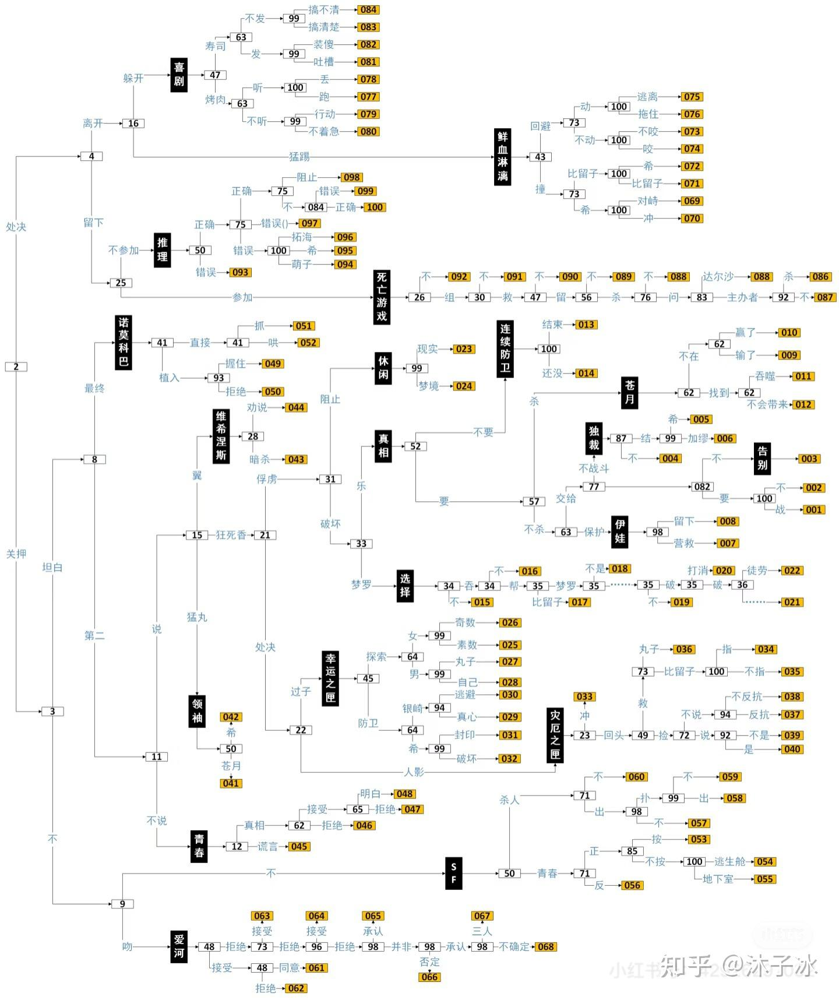
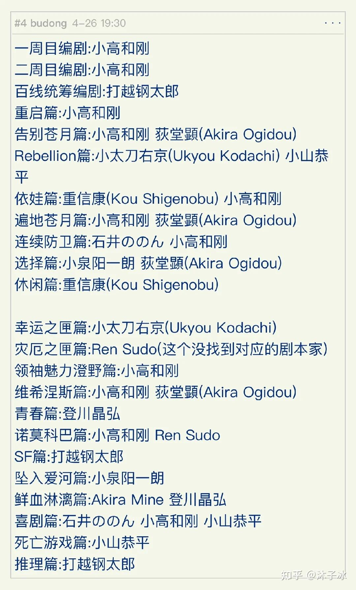

《百日战纪 -最终防卫学园-》游戏评价
写于2025.7.1
知乎链接：如何看待「百日战纪 -最终防卫学园-」在多个评测网站上获得了高分评价，但评分差异较大？ - 沐子冰的回答 - 知乎 https://www.zhihu.com/question/1897969761318569703/answer/1923199338512913295
刚刚云完一二周目90%支线，没看完的也都看了剧情，稍微评价一下这个游戏（已补票）。到有剧透的地方会提示～
先给出分数，个人可以给出90+的分数。在小高的所有作品里大概是只比弹丸II差的水平。百日战纪最大的特点就是100个结局，其中大概十多条大线，每条线上也都有不同的小分支结局。
游玩顺序极其推荐一周目打完直接进真相大白（独cai政权也行），否则真的会被莫名其妙的剧情搞心态，因为一周目玩完的玩家一定是非常想要了解真相的，但二周目不进真相大白就像是热情被浇灭，会对剧情十分失望，从而大大拉低体验。
--以下剧透--
总体上，这部的人设确实比较单薄，而且有点ooc。因为为了推进不同剧情的发展，需要有角色做一些降智操作（比如死亡游戏厄师寺拉对立，推理线银崎杀人等）。而且主角因为会做出选择决定未来，玩家为了过剧情做出违心的选择，让人没有代入感，从而无法共情，这些问题都是客观存在的。
但这部游戏想要传达的核心思想是非常成功的，一周目和真相大白的反战思想，看到最后雾藤的那张cg，很难让人不流眼泪。层层剥开迷雾（虽然进度太慢了），从战斗目的，到自己身处的位置，到真实身份的揭开，都体现了小高出色的剧本设计能力。想进真相线其实也不困难，按照角色对话和内心的认知，正常选就能大概率能进真相。
还令人感到惊喜的是各个支线剧本的关联度，抛开二周目主线剧情对TL穿梭毫无涉及（虽然会有点离谱，感觉不合理，但作为玩家相当于体验两大不同结局，也是非常不错的），各个支线之间的故事互相影响非常精彩。我最后走的SF线，前面所有莫名其妙的地方最后都得到了解答，看到澄野和雫原在各个TL上穿梭，遇到原本的澄野，和当时的剧情对上之后（包括QB液等各种），有一种非常震撼，非常爽的感觉。最惊艳的设计还是SF篇利用硬币创造新的TL来和自己合作，看到这的时候对打越真的赞叹不已。
此外在鲜血淋漓这条线上，虽然剧情确实有点莫名其妙，但抛开不谈，视角突然转成雾藤也非常惊喜。经常性转视角会让人眼花缭乱，但偶尔转一次视角让人觉得耳目一新。
最后，在很多支线上，都刻画了很多优秀的人物，比如二周目主线和告别苍月对苍月的刻画（遍地苍月也刻画很深，但欣赏不来），死亡游戏对川奈心态转变的刻画、面影行动动机的展现，诺莫科巴线对饴宫的担负责任，SF线雫原在其他线路的奇怪行动得到解释，形象得到完整。不同的选择会让不同角色体现自己的光辉，那我们现实中的普通人，会不会在另一条TL上做出不同选择，真正立起来了呢？（做个比喻，突然中二hhhhhh）
虽然这个游戏有各种不足，比如人设不太饱满，黄段子太多，洗脑太多不太能接受，有些线作为工具线确实比较差。但它在剧情上，真的做出了非常大的突破，也真正做到了一百个结局，大部分都有意义，是一部非常优秀的作品。
你是谁？请支持百日战纪！
附一张xhs来源的剧情线路图和编剧列表

